Inspired by https://florian.github.io/reading-2019/
Down Below
by Leonora Carrington, published 1983
This book describes Carrington’s ~1-year stay at a mental institution in 1940. Her story starts at the beginning of World War II in 1940, when her husband Max Ernst is sent to a concentration camp for the second time and she escapes to Spain. Carrington’s mental breakdown manifests en route to Spain and becomes publicly disruptive while in Spain. Her hotel, in conjunction with people probably related to her father’s company, traps her and sends her to a mental institution. The institution, perhaps conforming to the standards of the day, seems uninterested in actually helping her condition: no explanation is given on why she is there or what the treatment is and the staff encourages her delusions. Her doctor gives her three painful seizure-inducing injections of Cardiazol, the last one as a punishment for disobedience. The book ends abruptly when, in 1941, with the help of a friend, she is transferred to another institution and escapes en route to Mexico. Carrington wrote this memoir in 1943 while in Mexico, and she ended up living the rest of her life there.
Carrington tells her story as if she were reliving it and this makes the narrative unreliable. Her mental breakdown takes the form of attributing mystical meaning to everything she experiences and this meaning has a certainty as if it were common-sense, nevermind if it is later proven wrong. At the end of her stay at the mental institution, she meets another patient who explains her delusions to her. These explanations restore her lucidity and resolve her breakdown.
This was an uncomfortable book to read. The primary feeling I got was feeling overwhelming. During her breakdown, the world was filled with meaning to Carrington. While she seemed to enjoy the mind-blowing revelations she was encountering around every corner, as a reader, the delusions are obvious and non-stop.
I heard the vibrations of beings as clearly as voices – I understood from each particular vibration the attitude of each towards life, his degree of power, and his kindness or malevolence towards me. It was no longer necessary to translate noises, physical contacts, or sensations into rational terms or words. I understood every language in its particular domain: noises, sensations, colours, forms, etc., and every one found a twin correspondence in me and gave me a perfect answer.
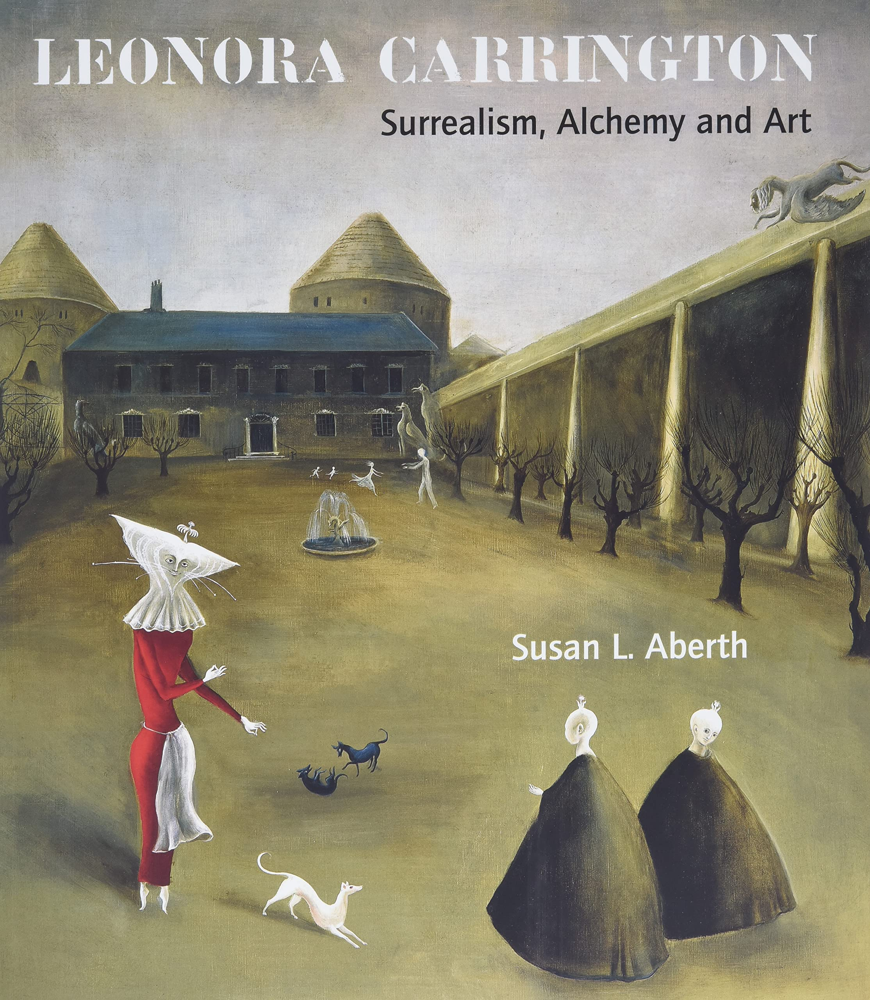
Leonora Carrington: Surrealism, Alchemy and Art
by Susan L. Aberth, Leonora Carrington, published 2004
This is a high-quality artbook containing paintings and other works by Leonora Carrington, a surrealist painter. This was my first time reading an art book and I was expecting a minimal intro followed by only photos, but actually only 72 out of 160 (or 45%) of pages are full-page photos – the others are a mix of text and photos. The text encompasses an academic biography with analysis and 241 footnotes. The biography is very comprehensive and well-cited, and I view it as Carrington’s definitive biography because of its rigor and because Aberth actually met the artist several times before Carrington died in 2011. While I initially wished that the text were replaced with more photos of Carrington’s work, I grew to enjoy the analysis because it gave context to the paintings. Aberth chose multiple paintings for a detailed, walk-through analysis that examined themes, symbols, and flow. These explanations pointed out many details that I missed and things I didn’t know. Without the context, I would have looked at a work and thought “Wow, this is weird and I like it. What is happening here and why is there so much garlic?”. With the context, I knew that garlic was used in witchcraft and this understanding increased my appreciation of the work.
Berserk Deluxe Edition Volume 1
by Kentaro Miura, Jason DeAngelis (translator), published 2019
I’ve already read most of the Berserk manga and was inspired to reread the beginning when I heard of the author’s death last year. I was surprise to find that it wasn’t as good as I remembered. The art is good but ordinary, and the overall story feels ordinary too and sometimes amateurish. My hazy memory recalled Puck (featured below) as an annoying and unnecessary flying pest. Annoying he is, but on my reread, I found that he provided much needed comical relief to Guts’ unexplained, extreme violence and overly dramatic declarations.
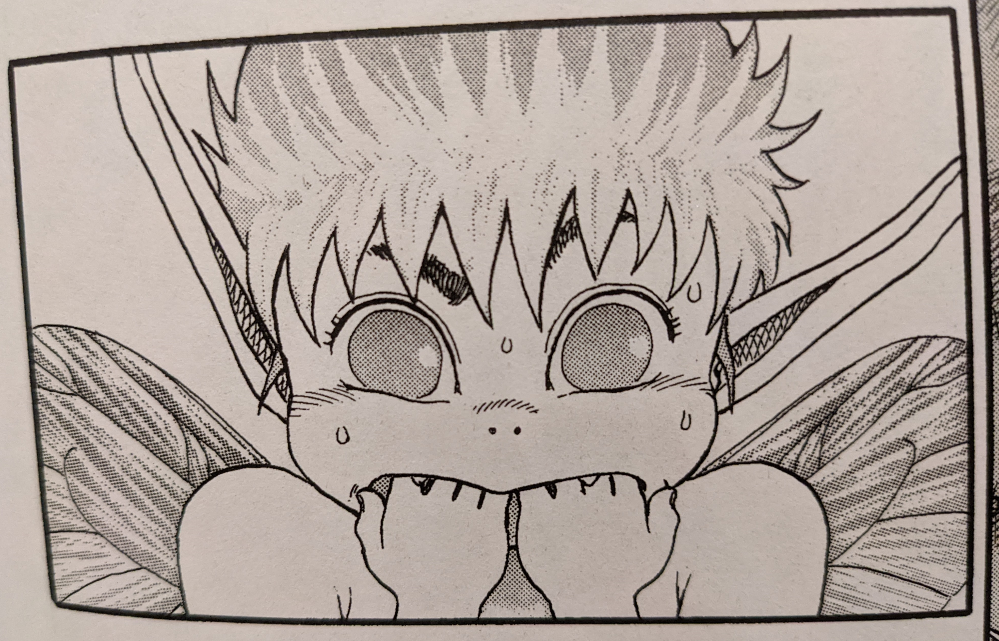On second thought, this work is amateurish and that makes sense. Miura started serialization of Berserk back in 1989 (when I was born!). Of course his latest work and my memory of his work is at a much higher standard compared to these initial volumes.
The book itself is well-made. It collects the first three volumes into a 696-page hardcover with faux leather, which gives the book the feel of a cursed grimoire. The book is also oversized at 7" x 10" versus the typical size of modern manga at 5" x 7.5" and so is 86% larger. The artwork is blown up and easier to appreciate.
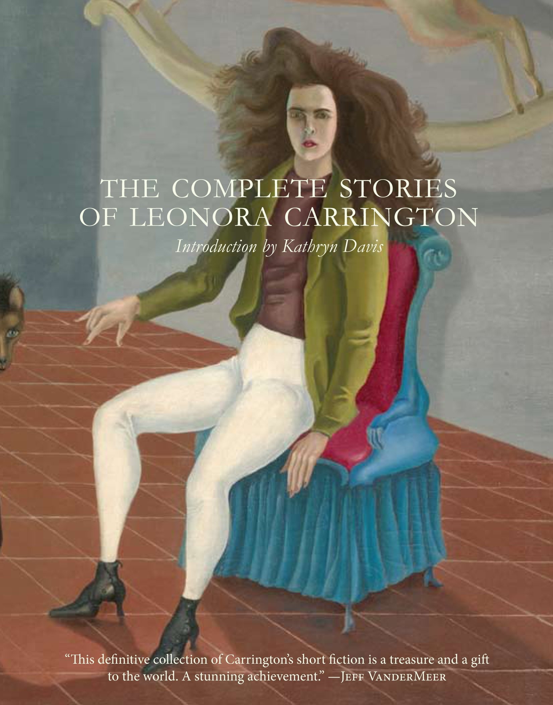
The Complete Stories of Leonora Carrington
By Leonora Carrington, published 2017
This book is a collection of surrealist short stories by Carrington. I picked this up because I enjoyed her paintings and wanted to see what surrealist writing is like. It’s weird. Things happen without explanation, lots of animals are involved, and plot is deliberately ignored. These stories remind me of reading Lafferty. Both authors wrote stories where fantastical things happen and the characters take them at face value, though Lafferty has a more American tall tale feeling while Carrington is more dream-like. Most of the stories are quite short at only a few pages, and they just sketch out a setting and scenario and then end abruptly … just like a painting!
We found ourselves in a high-ceilinged kitchen, where there was a large stove, glowing red with fire. Some vegetables were cooking themselves, jumping around in boiling water; this game delighted them.
The compassionate words of the Greek filled me with fear. I am a face myself. The quickest way of retiring from social Face-eating competition occurred to me when I attacked a policeman with my strong steel umbrella. I was quickly put into prison, where I spent months of health-giving meditation and compulsive exercise.
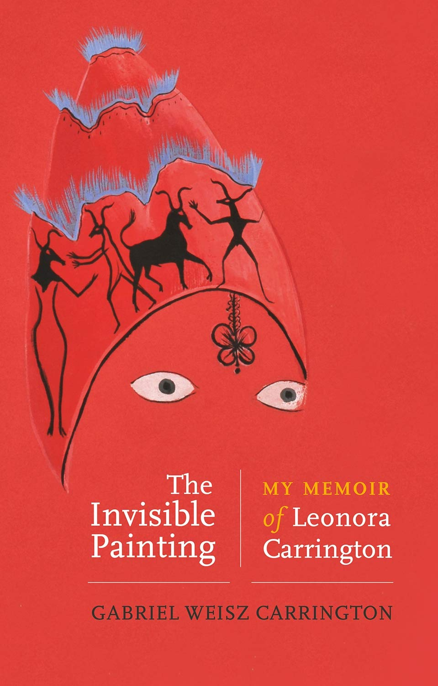
The Invisible Painting: My Memoir of Leonora Carrington
by Gabriel Weisz Carrington, published May 2021
This memoir on Leonara Carrington is written by her son, Gabriel. In contrast with the academic biographies I read earlier in the text of Surrealism, Alchemy and Art and the preface of The Complete Stories, this writing focuses on Gabriel’s life and interactions with his mother. His story starts with his Hungarian father and English mother, who were both refugees from WWII, and then moves onto scenes from his childhood: a train trip from Mexico to New York City en route to Europe, bullying at school, visiting the Met for the first time, etc. As Gabriel gets older, he starts collaborating with Leonora to create art. These collaborations and conversations on spirituality and mysticism fill the rest of the book and continue for the rest of Leonora’s life. Gabriel narrates until her death.
The primary feeling I got when reading this memoir was clarity; Gabriel’s writing feels so clear. On top of that, he sprinkles colorful imagery and metaphors – not surreal but real-life and vivid – to make the reader pause and smile.
While working in her studio, Leonora never allowed casual onlookers. Any poorly thought-through remark might damage the fragile balance of a work in progress. Something shatters when an onlooker splashes their interpretation over an unfinished work, and so she kept her delicate skeleton paintings away from any prying eyes.
I [Gabriel] sat on the floor playing with the cats while you [Leonora] and the rest of the guests chatted. All of a sudden there was a luminous flare and an explosion of music; the cats ran for cover, and a dozen naked men stampeded into the room, all neighing loudly and bucking like angry horses, swinging their equine masks from side to side. I was spellbound, delighted with this celebration of the electric energy of horses.
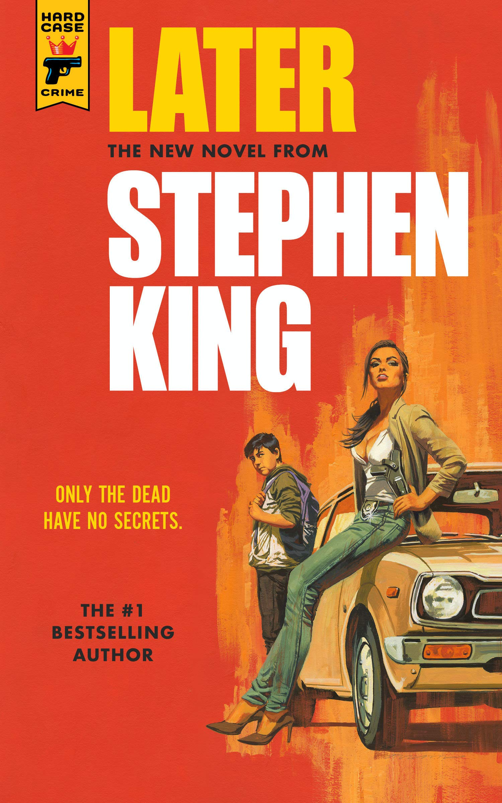
Later
by Stephen King, published 2021
This novel is King’s third work with Hard Case Crime, an American publisher that recreates the flavor of hard-boiled crime novels from the 1940s. It’s a straightforward horror/thriller told from the perspective of a young boy. Unlike some of King’s other novels, the scope of Later is limited and comfortable; there is a single narrator, everything takes place in or around New York City, and events are revealed chronologically. I read Later during my brain-dead moments after work in place of watching TV, and for that purpose, it was perfect.
A drawing of a turkey is a recurring theme, and it occurred to me that if I were still in school and “analyzing” this novel, I would probably write about the turkey. Thank god I don’t have to do that anymore.
My name is Jamie Conklin, and once upon a time I drew a Thanksgiving turkey that I thought was the absolute cat’s ass.
I know more now, but I believe less.
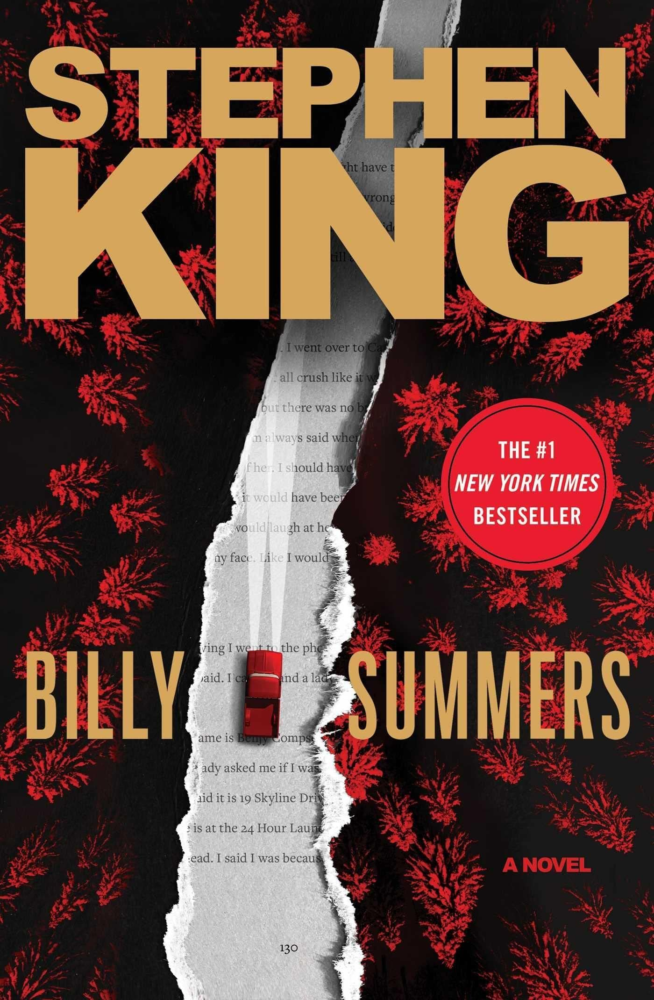
Billy Summers
by Stephen King, published 2021
This is a meaty novel filled with the down-to-earth America feeling and memorable characters that I associate with Stephen King. Unlike Later, which was like a series of short stories, Billy Summers is a long and involved crime thriller. The premise of the book is that a hired assassin, the eponymous Billy Summers, takes his last job. Billy is well-read and has seen the movies about what happens to other killers who take “a last job” so he knows what he’s walking into. Lots of questionable things happen that make you think “was that okay?” and the ending is magical.
He has no problem with bad people paying to have other bad people killed. He basically sees himself as a garbageman with a gun.
Summer rolls along. Hot and humid days of blaring sunshine are punctuated by sudden thunderstorms, some of them vicious with throats full of hail. A couple of tornados strike, but on the outskirts, none downtown in Midwood. When the storms blow out, they leave streets that steam and dry quickly.
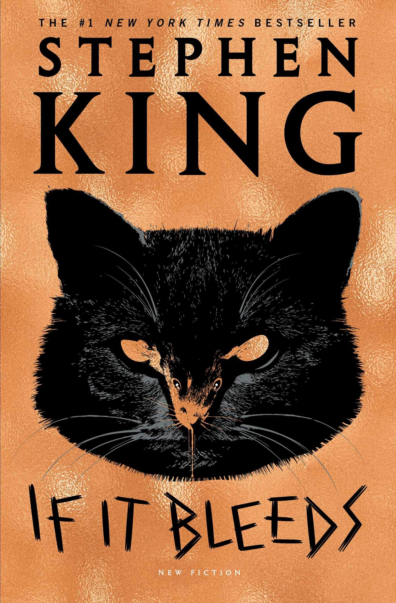
If It Bleeds
by Stephen King, published 2020
This book is a collection of four novellas.
| Novella | Length | Theme |
|---|---|---|
| Mr. Harrington’s Phone | 96 | about cellphones |
| The Life of Chuck | 61 | sci-fi-esque |
| If It Bleeds | 186 | continuation of the The Outsider |
| Rat | 93 | a writer meets a rat |
The eponymous novella barely has to do with bleeding – it’s just a neat phrase the protagonist writes down in passing. In the final novella, Rat, the protagonist does meet a rat, but at no point is there a cat. I mention these two points because I was deterred from buying this book off the shelf by the title and cover image. That aside, I enjoyed all four stories.
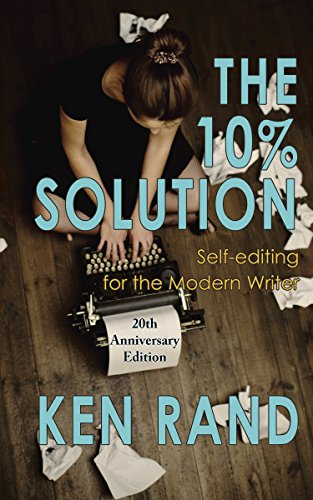
The 10% Solution (20th Anniversary Edition)
by Ken Rand, published 2008 (original version 1998)
This book is physically hypocritical. The author, Rand, advises against being puffy, but this 100-page book has huge font (14-point?) and the first 44 pages are unhelpful storytelling and advertising. Rand starts off by enumerating situations when you would write and then declaring that The Ten Percent Solution (TTPS) helps in all those cases. He even says outright:
Big claims for a small book.
Next, Rand moves onto the Theory section, which is 20 pages of him telling personal stories and hinting at how great TTPS is without actually giving specific details or examples. He implies that TTPS is “cutting 10% from your first draft and then calling it done”, but doesn’t elaborate and dangles the details as if this book were a sales brochure. He keeps the details of TTPS a secret like he’s afraid of spilling the secret sauce – a direct contradiction with his view that ideas are abundant and implementation is the key. The first half of the book can be summarized by his self-praise:
…I knew the Ten Percent Solution was a Good Thing.
This book would have strongly benefited from a one-page “how-to” guide that collects and summarizes all the information that Rand has scattered around. We can’t blame Rand too much for his overly casual tone because that was probably en-vogue 20 years ago. We can blame the publisher, Fairwood Press, for a low effort job on this “20th Anniversary Edition”, an unprofessional and unattractive cover image, and not hiring a guest writer to add additional content like a one-pager or additional appendices.
In lieu of an official guide, I present my own below:
- Write fast and defer all editing, i.e. spelling, punctuation, grammar, details, fact checking
- Do a “general writerly edit” to fix the editing you deferred above and
Ensure your descriptions are accurate, your scenes clear, your examples concrete and pertinent, transitions smooth.
- Apply The Ten Percent Solution
- Micro level
- Search for 26 phrases, e.g “ly”
- Look at the highlighted word and the sentence in which it appears
- Decide on the action to take by focusing on accuracy, clarity, and brevity:
- Keep it as-is
- Change it
- Delete it
- Macro level
- Remove widows – words on lines by themselves
- Read the text aloud
- Print the text out and read it
- Give the text to someone to read and give feedback
- Micro level
book breakdown
| Section | Length | Note |
|---|---|---|
| intro/TOC/fluff | 20 | useless |
| Intro | 4 | advertising & storytelling |
| Theory | 20 | advertising & storytelling |
| Practice | 12 | good |
| The Micro | 22 | great examples! |
| The Macro | 15 | good ideas |
| Appendices | 7 | helpful before & after example |
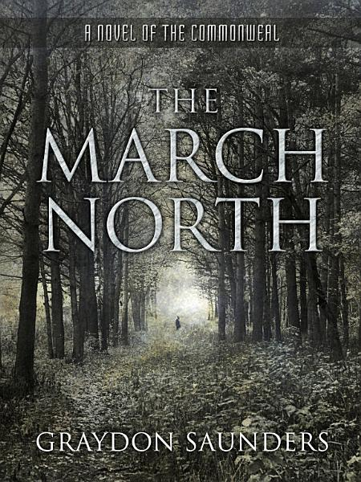
The March North
by Graydon Saunders, published 2014
This book is weird. Reading it made me feel like I have brain damage, which was unexpected and unpleasant. The grammar is consistently, slightly off, as if Saunders speaks a different dialect of English, e.g.
For some guy whose ancestors weren’t born here, or for a standard half of them think runs on necromancy, there just isn’t any reflex of trust.
I gave this book 100 pages then abandoned it.
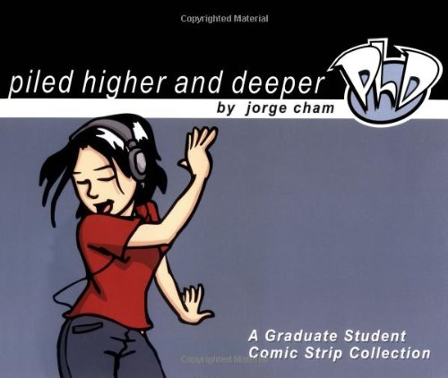
Piled Higher and Deeper: A Graduate Student Comic Strip Collection
by Jorge Cham, published 2002
I had high hopes for this book because I remembered reading some of these comics during college and relating to them. Those days are long past and I couldn’t connect with Cham’s humor. The jokes felt like water-cooler talk and complaints among colleagues aka graduate students. I was looking for laughs and didn’t get any.
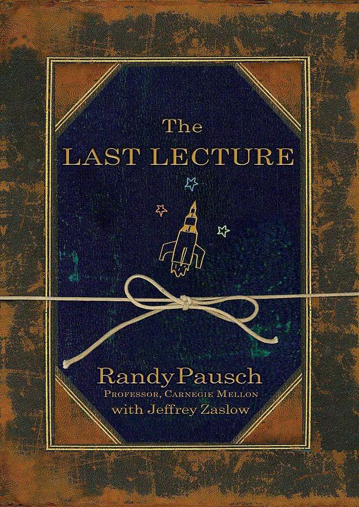
The Last Lecture
by Randy Pausch and Jeffrey Zaslow (Contributor), published 2008
This book is ostensibly an expanded version of “The Last Lecture: Really Achieving Your Childhood Dreams” (link) that Pausch, a CMU CS professor, gave in 2007 before dying from pancreatic cancer. While this may be true (I haven’t watched the lecture), the book reads more like an autobiography than a lecture. Pausch was an extraordinary man and a lot of his advice seems inapplicable to people with normal energy levels and intelligence. Nevertheless, I enjoyed hearing about his life adventures, quest to preserve his love for this children after this death, and myriad aphorisms:
Experience is what you get when you didn’t get what you wanted.
When it comes to men who are romantically interested in you, it’s really simple. Just ignore everything they say and only pay attention to what they do.
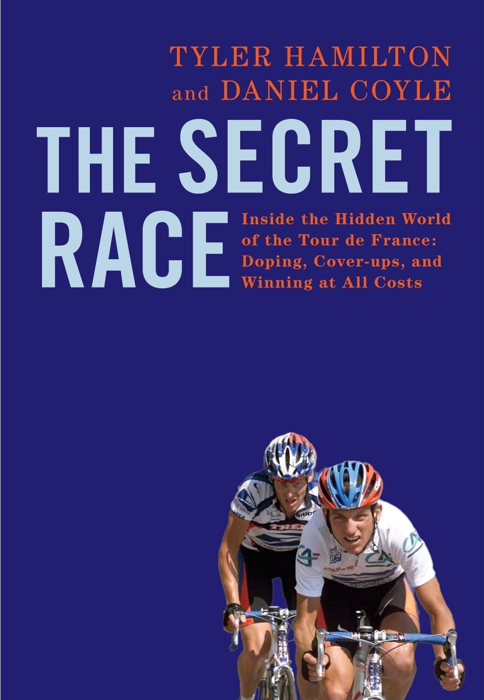
The Secret Race: Inside the Hidden World of the Tour de France
by Tyler Hamilton and Daniel Coyle, published 2012
Tyler Hamilton is a (stripped) Olympic Gold medalist who narrated his story to journalist Daniel Coyle over the course of almost two years. Hamilton talked about how he made it into the big leagues in cycling, his time with Lance Armstrong, and the end of his cycling career after doping charges. It was interesting to hear about how riders were able to push their bodies to the physical limit and beyond. I had already heard of Armstrong’s admission of doping back in 2013. It felt historical to hear Hamilton’s accounts of the stories leading up to 2012 when Armstrong’s legal troubles began and Hamilton’s skepticism that they would amount to anything because Lance had escaped doping charges in the past.
I kept pushing, going right to the limit and staying there. I can tell I’m at the limit when I can taste a little bit of blood in my mouth, and that’s how I stayed, right on the edge. This moment is why I fell in love with bike racing, and why I still love it – the mysterious surprises that can happen when you give everything you’ve got. You push yourself to the absolute limit – when your muscles are screaming, when your heart is going to explode, when you can feel the lactic acid seeping into your face and hands – and then you nudge yourself a little bit further, and then a little further still, and then things happen. Sometimes you blow up; other times you hit that limit and can’t get past it. But sometimes you get past it, and you get into a place where the pain increases so much that you disappear completely. I know that sounds kind of zen but that’s what it feels like.
In some ways, it’s depressing. But in other ways, I think it’s human. One thousand mornings of waking up with hope; a thousand afternoons of being crushed. A thousand days of paniagua [bread and water aka not doping], bumping painfully against the wall at the edge of your limits, trying to find a way past. A thousand days of getting signals that doping is okay, signals from powerful people you trust and admire, signals that say It’ll be fine and Everybody’s doing it. And beneath all that, the fact that if you don’t find a way to ride faster, then your career is over. Willpower might be strong, but it’s not infinite.
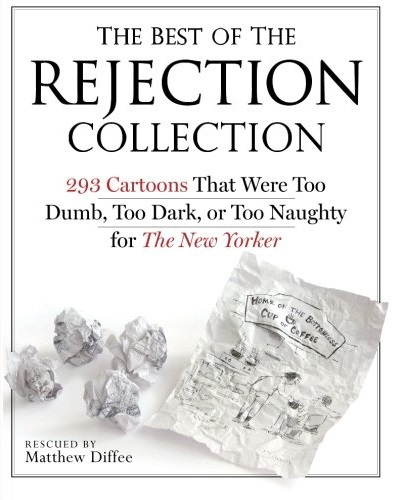
The Best of the Rejection Collection: 293 Cartoons That Were Too Dumb, Too Dark, or Too Naughty for The New Yorker
by Matthew Diffee, published 2011
Cartoonist Matthew Diffee contacted his cartooning colleagues to collect their rejected submissions to the New Yorker to create this book. 42 cartoonists are featured and each section starts with a 2-page Q&A profile. These Q&A profiles make up more than a quarter of the book and they were my least favorite part. I didn’t find them funny and started skipping them after reading the first few.
I enjoyed the actual comics and found many of them to be funnier than the actual New Yorker comics that often feel flat and make me think “so what?”. Despite the book’s title, Diffee proposes “10 Possible Reasons Why Cartoons Get Rejected by the New Yorker”:
- Too low-brow
- Too politically incorrect
- Most of these were about Native Americans
- Too dark
- My favorite one was by David Sipress. A triumphant-looking doctor walks into an office and announces “Congratulations! I think we got it all.” All that’s left of the patient is a frowning head on the bed.
- I also liked one by Leo Cullum – two raccoons are talking to each: the one on the right is wearing a raccoon-tail hat and says “Now I think of Mom whenever it’s cold”
- Too weird
- Too political
- Too difficult to get
- Too dumb
- Too bad
- There were lots of these
- All of the above
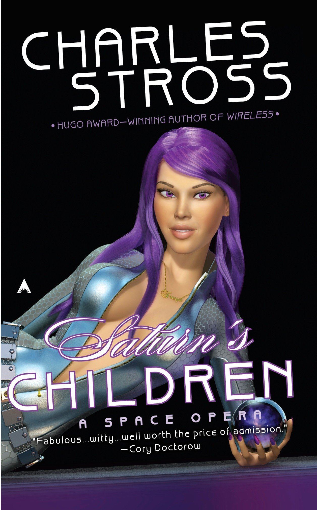
Saturn’s Children (Freyaverse #1)
by Charles Stross, published 2008
This is a funny book. Stross writes with the kind of deadpan humor I like and doesn’t take himself too seriously. The book is filled with colorful sci-fi contraptions and I found it to be a light, enjoyable read.
Saturn’s Children is about a sex android, Freya, in a future where humanity recently went extinct. Freya gets into trouble and takes a series of planet-hopping jobs to try to dig her way out.
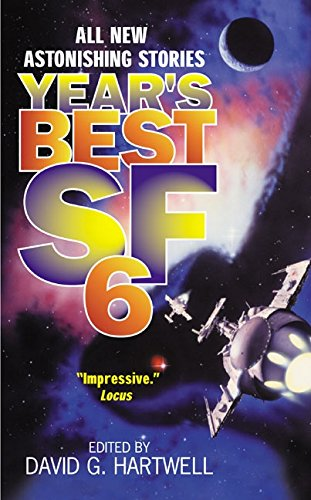
Year’s Best SF 6
by David G. Hartwell, published 2001
Year’s Best SF 6 is an old anthology published in 2001 that I picked up for a dollar at a used book sale. I used to read a lot of sci-fi short stories. I worked through several “Best of” anthologies and even some author’s collected works. I eventually moved onto novels and other genres and haven’t come back until now, so it was nostalgic and exciting to rediscover the enjoyment of sci-fi short stories. From Googling (link), I also just learned that sci-fi was historically a pejorative term (less so these days) and that the hard-core community preferred the abbreviation SF. This explains the book’s title, though in my mind at least, SF stands for San Francisco.
I was excited to read a story (Different Kinds of Darkness by David Langford) about physical inputs that can cause mental harm. I had previously read a story about an assassin duel-off using sound to influence each over, and (spoiler!) Different Kinds of Darkness explores visual weapons. I especially liked that the framing of the story was about children’s life in school and the weapon aspect was only revealed as a twist at the end.
What I like about sci-fi short stories is that they usually focus on just a single idea. After finishing the entire story in a single sitting, it’s easy to hold the whole story in your mind and revisit it. Though the first few sentences are an important hook regardless of genre, I find that short story openers are particularly good and I saved a few below:
Tazu was having a tantrum, because he was three. After the birthday of the world, tomorrow, he would be four and would not have tantrums. Ursula K. Le Guin The Birthday of the World
I have three heads. I am the one in the middle. Howard Waldrop Our Mortal Span
In a quiet moment late in the tranquil year of 2999 four men are struggling to reach an agreement over the details of their plan to blow up the Louvre. Robert Silverberg The Millenium Express

Skin in the Game
by Nassim Nicholas Taleb, published 2017
Skin in the Game’s main idea is that it’s necessary to face the risks aka downsides of your actions, otherwise perverse incentives and wrong decisions abound. Taleb’s tone is breezy, sarcastic, and critical – perhaps all excessively so. I was expecting a more academic and serious book and was initially annoyed by his tone:
…the conventional educational system, made by dweebs for dweebs. So learning isn’t quite what we teach inmates inside the high security prisons called schools. Administrators everywhere on the planet, in all business and pursuits, and at all times in history, have been the plague.
However, halfway through, I realized that the book’s breezy style and tone – jumping from topic to topic quickly and summarizing things with aphorisms – was just like a conversation. When I took the words less seriously and imagined that Taleb was talking to me, I was able to enjoy the book more. I didn’t agree with every point that Taleb made. For example, he attributes interventionista’s failures to force regime change abroad completely to ineptitude without considering other and ulterior motives. I’m inclined to believe that prominent leaders are intelligent and understand the impact of their decisions, though they may be malicious and against the public interest. Similarly, Taleb argues for his preference of a rough, butcher-looking doctor over a proper, doctor-looking doctor because, by not conforming to social norms, the rough one needed to prove himself to a greater extent and is so more skilled. Taleb didn’t devote a lot of space to justifying his arguments; he instead opted to cover many topics and brought up many interesting and new (to me) viewpoints. I particularly liked the pithy aphorisms he ends each section with:
Not everything that happens happens for a reason, but everything that survives survives for a reason.
[S]tudying courage in textbooks doesn’t make you any more courageous than eating cow meat makes you bovine.
You do not want to win an argument. You want to win.
Dignity: Seeking Respect in Back Row America
by Chris Arnade, published 2019
Arnade is a Wall Street trader who spent two years exploring the Hunts Point neighborhood in New York City and then the next three years exploring other poor neighborhoods around America. The book is a photo documentary about how the well-intentioned, educated elites try to help the lower class but are ineffective because they don’t understand their lives:
We [the educational elite] had compassion for the left behind but thought that our job was to provide them an opportunity (no matter how small) to get where we were. We didn’t think about changing our definition of success. It didn’t occur to us that what we valued – getting more education and owning more stuff – wasn’t what everyone else wanted.
Regardless of its correctness, this line of thinking startled me because it matched mine exactly – if your current job doesn’t pay enough, then the right thing to do is move to a place with more jobs or get more education. Many people don’t have the money, time, or desire to leave their hometowns for better jobs or education because their identity is tied to their community. It’s hard for those without this community – those who repeatedly uproot for college then work – to understand this mindset.
Arnade doesn’t provide much commentary or offer solutions; instead he focuses on capturing the images (~50% of the book is photos) and stories of the people he meets. For example, he relates one woman’s acceptance of with her life:
Being out on the streets prostituting, being homeless, having boyfriends who sold drugs, this wasn’t abnormal or weird for Beauty, and she didn’t feel sorry for herself. It was the world she came from and the world she knew and the world she saw, and she had made it in the big city.
Yet earlier, he talks about the shared community and despair of drug users:
The drugs don’t just provide a temporary mental escape from an ugly reality. They also provide a sense of belonging, a real community. The world of drugs is accepting as long as you continue to use drugs.
And then later, he shares the story of another prostitute’s despair and wish for death. Arnade, thankfully, doesn’t try to reconcile these contradictions. Similarly, none of the pictures have captions.
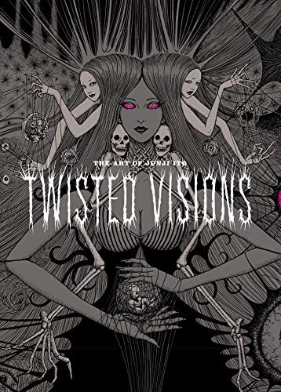
The Art of Junji Ito: Twisted Visions
by Junji Ito, published 2020
This book is a collection of Ito’s works (primarily manga panels and covers) over the years. It’s a large format book (8.4 x 0.9 x 11.5 inches) and it was great to see both familiar scenes blown up and new content. I really liked the format of the book. There is no introduction and the first 90% of the book is simply full-page illustrations with no space wasted on commentary. Then, at the end, there is a one-page afterword by Ito, a table of contents with brief notes for every illustration, and finally a four page interview. This format (literally) puts the art first for maximum size, enjoyment, and personal interpretation; the details and commentary are reserved only for those interested readers. This was the rare book that I read twice through.

Ito’s commentary is deadpan and humble:
In the manga Uzamaki, I was supposedly explaining the mystery of the spiral pattern that has existed since ancient times. But the mystery’s not solved by the time we get to the final chapter, so I drew Lovecraft-like ruins to cook something up and get out of there.